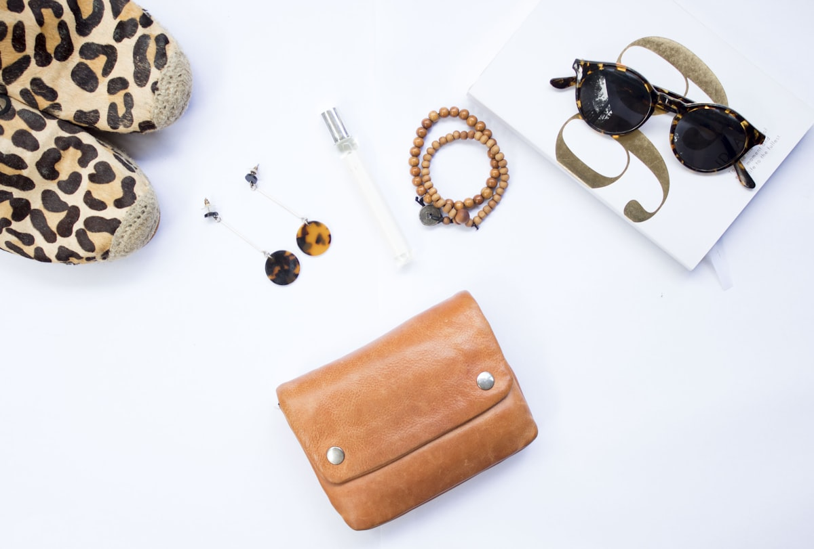

The Preservation Philosophy of Haute Couture
Acquiring a bespoke silk velvet garment or tailored couture coat is an investment in enduring personal style and master craftsmanship. Yet, the longevity and physical beauty of that investment depend directly on the reverence and understanding with which it is maintained.
Natural fibers—pure Mulberry silk, fine British wool, and horsehair canvas—are living biological structures. They expand and contract with humidity, breathe with ambient air circulation, and respond dynamically to thermal grooming. By mastering three foundational care disciplines—vertical steam inversion, natural horsehair brushing, and archival cotton storage—patrons can preserve the luminous luster and structural roll of their garments across decades.
Routine maintenance of bespoke attire is not a chore; it is a mindful sartorial ritual that reconnects the wearer with the tactile soul of the garment. When properly stewarded, a bespoke velvet coat develops a subtle, dignified patina that enhances its beauty over time.
The Golden Rule: Never Flat Iron Silk Velvet
The most catastrophic mistake in velvet maintenance is applying a traditional dry flat iron to the face of the fabric. Because velvet derives its plush texture from millions of upright pile tufts, the direct downward heat and mechanical pressure of an iron will crush the delicate silk filaments permanently against the ground weave, creating shiny, irreparable flat patches ("iron bruising").
Instead, velvet must be revitalized exclusively through indirect vertical steam. When warm steam molecules penetrate the fabric weave, they gently relax the hydrogen bonds within the silk protein fibers, allowing the natural elasticity of the yarn to spring the crushed pile tufts back into their upright vertical orientation.
If horizontal pressing is absolutely required during complex tailoring adjustments, artisans use a specialized "needle board" (velvet board)—a metallic mat covered with thousands of fine vertical brass wires that support the velvet face without compressing the pile while heat is applied from the rear canvas side.
The Vertical Steam Inversion Protocol
To steam your velvet eveningwear or tailored blazer with professional salon precision, follow our atelier protocol:
- Suspend on Contoured Hanger: Hang the garment on a wide-shouldered, contoured cedar or hardwood hanger inside an open dressing area away from direct sunlight.
- Maintain Safety Distance: Hold a vertical garment steamer nozzle 10 to 15 centimeters away from the velvet surface. Never allow the hot metal steamer head to touch or drag against the pile.
- Upward Steam Sweep: Sweep the steam wand smoothly from bottom to top, working against the natural nap. This encourages the steam to enter between the pile shafts, lifting them upward.
- Underside Steaming for Heavy Creases: For persistent wrinkles, steam the garment from the inside lining side. The steam will pass through the breathable silk lining into the base weave, pushing the pile outward without direct surface contact.
- Cooling & Setting Phase: Allow the garment to hang undisturbed for at least thirty minutes in a well-ventilated room before wearing or returning to wardrobe storage. Putting on a warm, damp garment will cause immediate creasing around elbows and seat areas.
Natural Horsehair Brushing Techniques
During regular wear, garments collect microscopic airborne dust particles, environmental debris, and atmospheric lint. If left unaddressed, these abrasive micro-particles settle deep within the velvet pile base, causing micro-friction that accelerates fiber wear.
After every single wear, groom your garment with a high-density natural horsehair clothes brush. Unlike synthetic plastic bristle brushes that generate static electricity and scratch delicate silk sheaths, natural horsehair possesses fine microscopic scales that lift dust particles gently without abrading the pile.
Always brush in long, smooth, downward strokes in the direction of the natural velvet nap. For collars, lapels, and pocket welts, use short, flicking strokes to dislodge settled particles before smoothing the fibers flat.
We recommend maintaining two distinct brushes: a soft, long-bristle brush for daily velvet pile grooming, and a slightly firmer medium-bristle brush for wool overcoats and trouser cuffs.
Wardrobe Resting, Hangers & Archival Storage
Garments require rest between wearings. Tailored wools and velvets should never be worn two days consecutively; giving a garment 48 hours of hanging rest allows natural wool crimp and silk resilience to recover their organic shape.
Storage protocols must adhere to strict conservation standards:
- Never Use Wire or Thin Plastic Hangers: Thin hangers concentrate garment weight on two narrow points, stretching shoulder seams and creating permanent puckering. Always use wide-contoured wooden hangers with extended shoulder flares.
- Breathable Unbleached Cotton Garment Bags: Never store luxury garments inside non-breathable poly dry-cleaning bags. Plastic traps ambient moisture, fostering mildew growth and causing silk fibers to dry out and become brittle. Use 100% breathable unbleached cotton bags.
- Natural Organic Moth Deterrents: Protect garments with natural red cedar blocks and dried lavender sachets rather than toxic chemical mothballs. Sand cedar blocks lightly once annually to refresh their natural essential oil potency.
- Climate Control: Maintain wardrobe closets in a temperate climate (18°C–22°C with 45–55% relative humidity) away from direct ultraviolet sunlight, which can fade botanical dyes over prolonged exposure.
Managing Accidental Spills and Professional Care
In the event of an accidental liquid spill during an evening dinner or gala:
Act Fast with Blotting: Never rub or scrub a spill on velvet! Rubbing drives the liquid deep into the pile base and spreads the stain. Immediately blot the spill gently with a dry, clean, lint-free white cotton cloth or silk handkerchief.
Seek Specialized Couture Cleaners: When professional cleaning is necessary, entrust your garment exclusively to an accredited haute couture cleaning specialist who utilizes gentle, non-aggressive solvent methods and dedicated velvet needle-board finishing equipment.